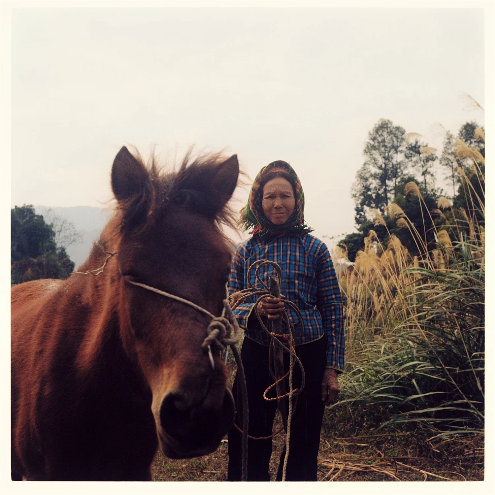
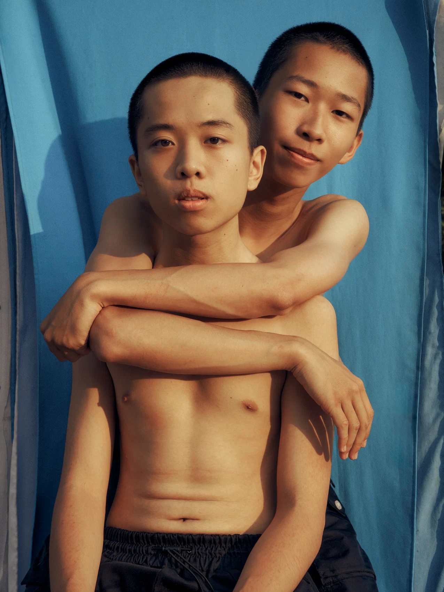
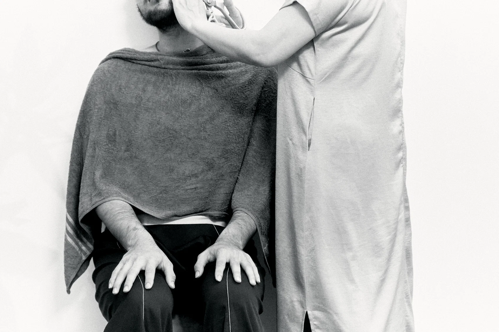
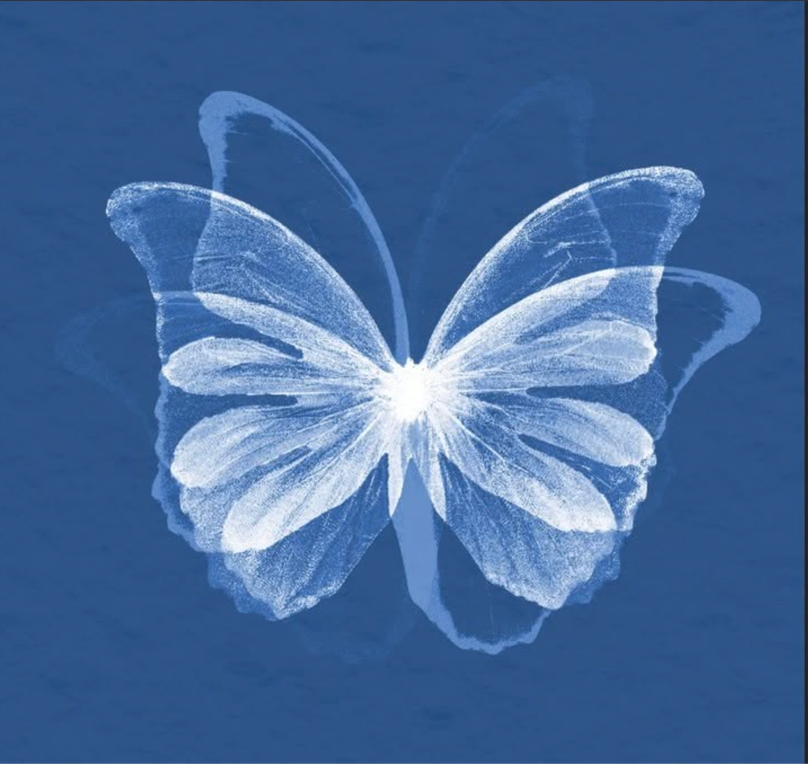
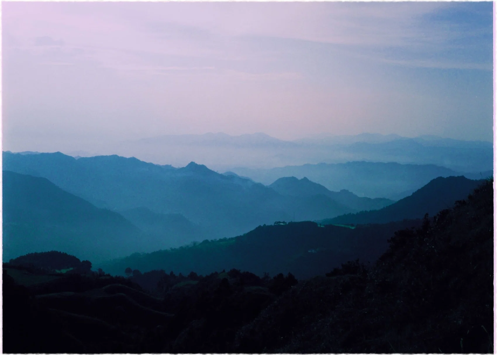

PHOTOGRAPHER & VISUAL ARTISTVIỆT NAM / 2020—2026
Ways of Seeing.
Photography is my way of getting to know people, places and myself.

Documentary
Portrait & editorial
Personal projects
Visual experimentsSELECTED WORK / 2020–2026Explore selected work ↓
A NOTE ON LOOKING
I photograph what I encounter, what I remember and what I am still trying to understand.
01 / SELECTED WORK
Projects
Documentary, personal work and experiments.
02 / MOVING IMAGE
Film & MV
Photographic work from moving-image projects.

BETWEEN PLACES
Between
places.
03 / IMAGE INDEX
Visual Archive
Browse by subject, project, place or year.
04 / ABOUTHanh
Hanh
Nguyễn.
I am a photographer and visual artist from Vietnam. I make documentary photographs, personal projects and visual experiments.
I studied Photography and Multimedia Communication at the Hanoi Academy of Theatre and Cinema.